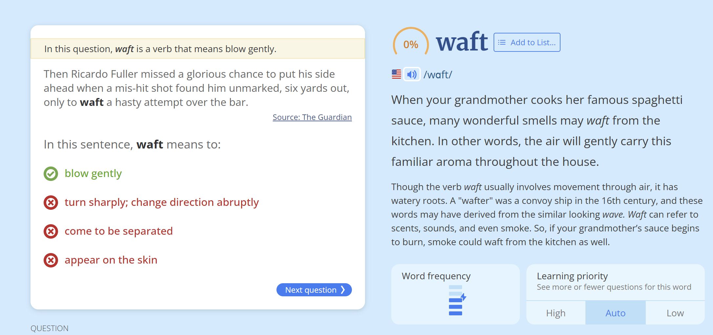
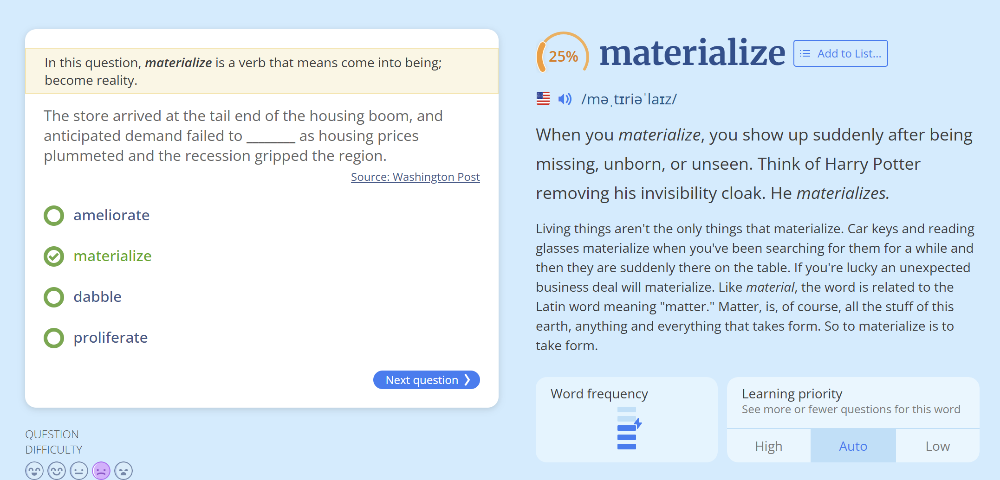
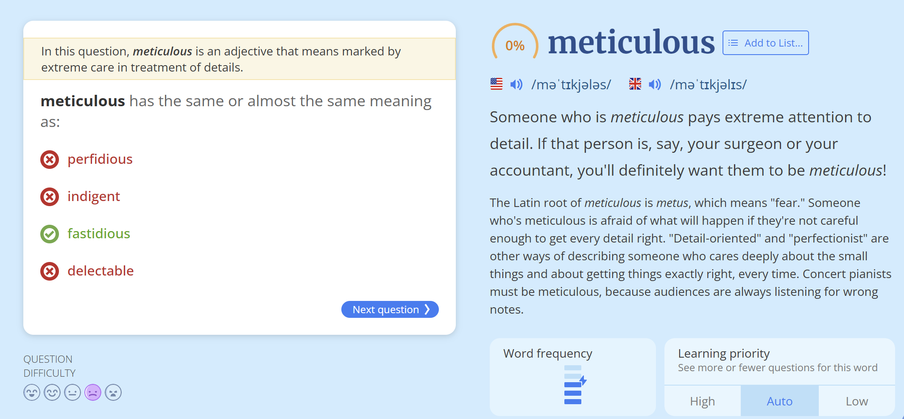

随后，里卡多·富勒错失了一次绝佳的破门良机——他在六码处无人盯防的情况下接到一记传球，却仓促起脚，将球打飞越过横梁。
（翻译说明：
1. "mis-hit shot" 译为“一记传球”，结合上下文理解为队友的传球不够精准但意外落到富勒脚下。
2. "unmarked" 译为“无人盯防”，符合足球术语。
3. "waft a hasty attempt" 意译为“仓促起脚”，保留动作的匆忙感。
4. "over the bar" 译为“越过横梁”，是足球比赛中射门偏出的标准表达。）

The correct answer is: materialize
Full Sentence:
"The store arrived at the tail end of the housing boom, and anticipated demand failed to materialize as housing prices plummeted and the recession gripped the region."
Translation (Chinese):
这家商店开业时正值房地产繁荣的尾声，但随着房价暴跌和经济衰退席卷该地区，预期的需求并未实现。
Explanation:
- Materialize (实现，成为现实) means to happen or develop as expected.
- In this context, the store expected high demand, but due to the recession, that demand did not materialize (没有实现).
- Other options:
- Ameliorate (改善) – Doesn’t fit; demand doesn’t "improve."
- Dabble (涉猎) – Irrelevant here.
- Proliferate (激增) – The opposite of what happened (demand decreased, not increased).
Thus, "materialize" is the best choice.

The correct answer is: fastidious
Explanation:
- Meticulous (一丝不苟的，严谨的) means showing great attention to detail and being very careful and precise.
- Fastidious (挑剔的，苛求的) also means being very attentive to accuracy and detail, making it the closest synonym.
Why Not the Others?
- Perfidious (背信弃义的) – Means deceitful or treacherous (completely different meaning).
- Indigent (贫困的) – Means poor or needy (no relation to attention to detail).
- Delectable (美味的) – Means delicious (unrelated to carefulness).
Example Usage:
- "She was meticulous in her research, checking every source twice."
- "He was fastidious about keeping his workspace perfectly organized."
Thus, fastidious is the best synonym for meticulous.
"A2A" 是 "Asked to Answer" 的缩写，常见于论坛（如Quora）中，表示回答者是被邀请（或点名）来回答该问题的。